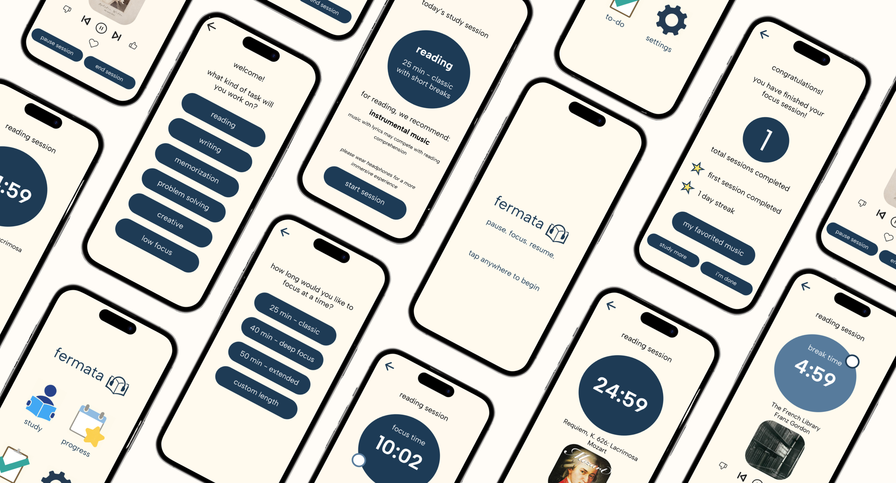
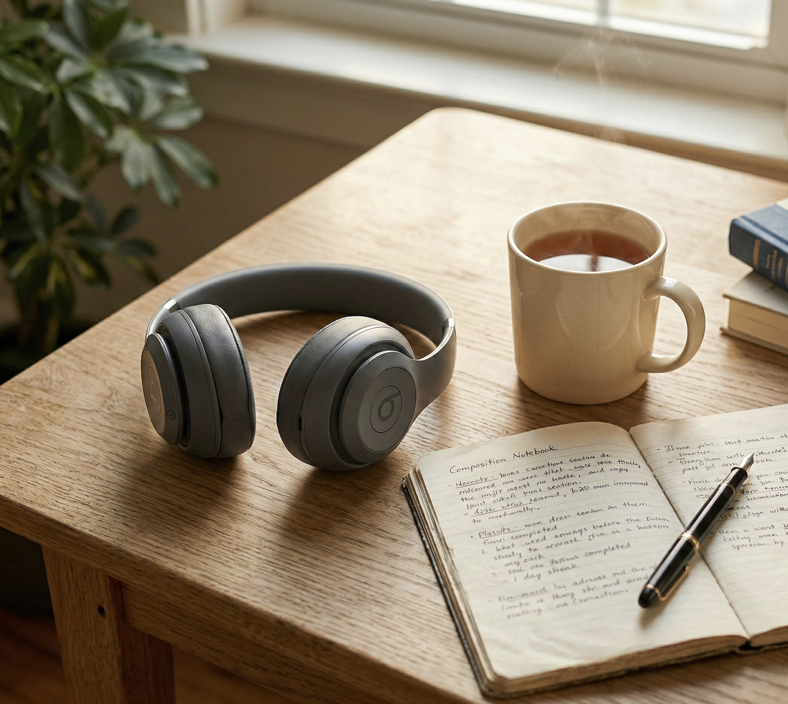
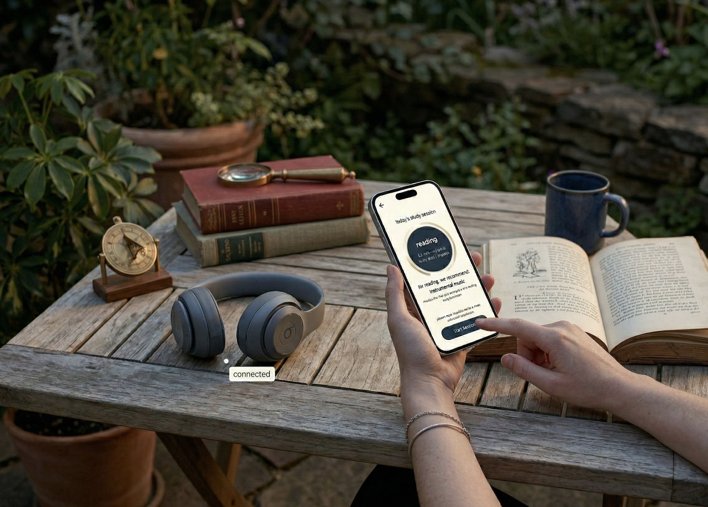
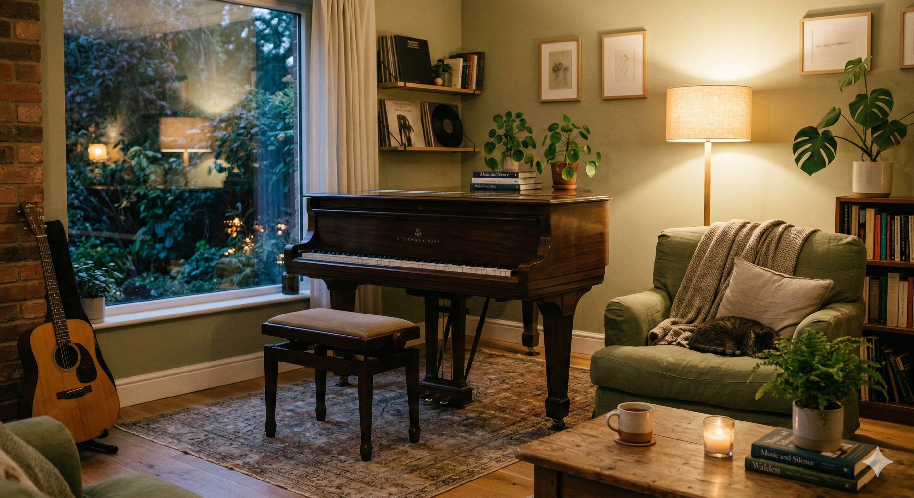

fermata helps you create customized focus sessions with a curated playlist based on your task at hand.
our research shows that music with lyrics can slow you down for certain tasks, but the right music can help you power through your work.
with fermata, you can measure your focus and make informed decisions about how to use music as a tool for productivity.


we tested how music type impacts reading comprehension using 4 conditions: no music, instrumental, foreign-language lyrics, and english lyrics (n=18).
78% comprehension — no music
76% comprehension — instrumental
62% comprehension — foreign lyrics
52% comprehension — english lyrics

fermata matches your session to your task, so your music supports your goals — not your distractions.

our results suggest semantically understood lyrics create the most interference for reading-heavy tasks.
+1.4 min slower study progress on average with english lyrics
english lyrics increased reported distraction and cognitive effort
research on music and focus can be dense. fermata translates findings into clear, practical recommendations for everyday study habits.